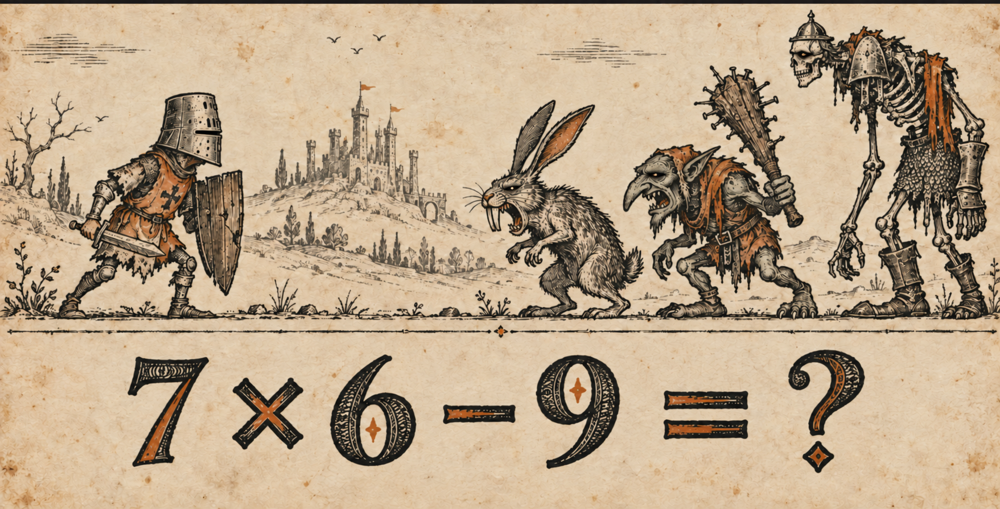
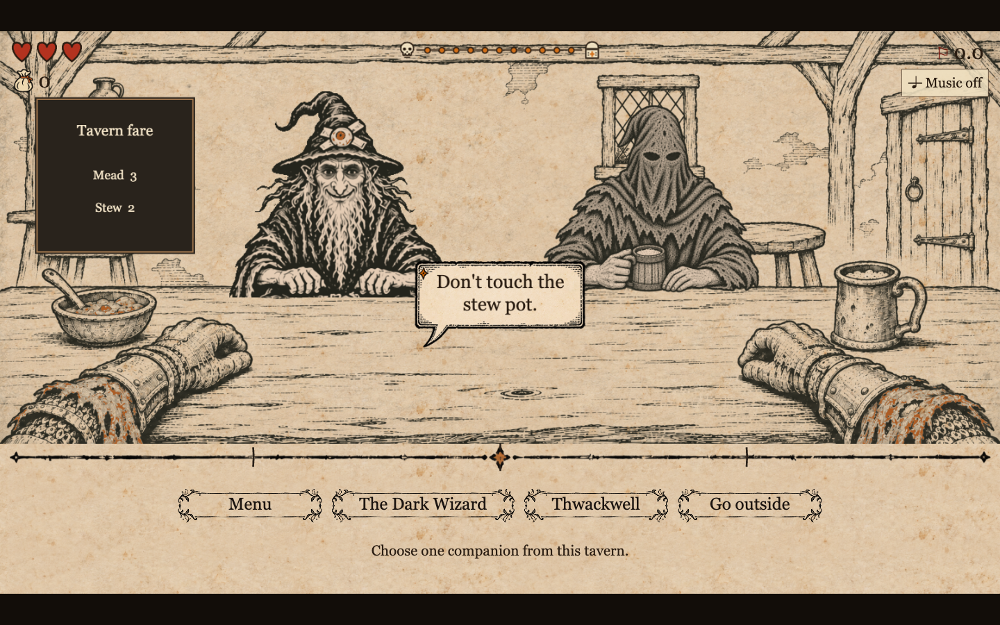
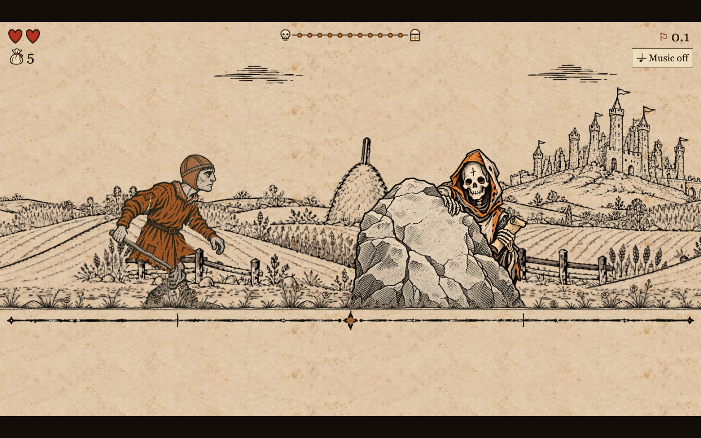

Medieval Math — art direction
This corrected concept is the visual authority. Small shaded eyes, tiny pale glints, worn black woodcut linework and restrained orange. New generated images do not replace this reference.

Reference colour families
Magnus withdrew the strict colour limit on 5 November. These swatches are reference families; preserve natural print variation and use restrained earth tones for readable materials. Avoid blanket yellow casts and glossy highlights. The game’s existing paper texture is the continuous background for world and menu.
Checks before delivery
Compare to the concept at actual game size; check silhouette, face, eye size, ink weight, detail density and colour. Inspect every animation frame and the moving loop. Accessories must remain attached and must not change orientation. Check opaque interiors, ground joins, scene transitions and the UI in both languages.
Full rules and exceptions · Play the game
Current in-game checks — awaiting your art review
These are implementation screenshots, not replacements for the approved concept above.

